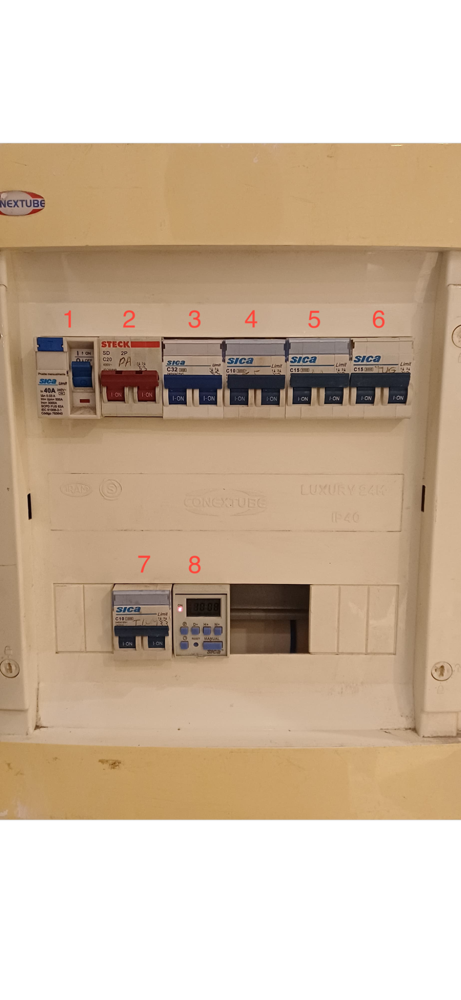

1
Disyuntor Principal, corte total de la casa.
2
Tablero Seccional Planta Alta.
3
Calentador agua cocina, lavaplatos, cocina.
4
Iluminacion Exterior.
5
Aire acondicionado.
6
Tomas Planta baja y quincha.
7
Iluminacion planta baja.
8
Timer Iluminacion exterior.